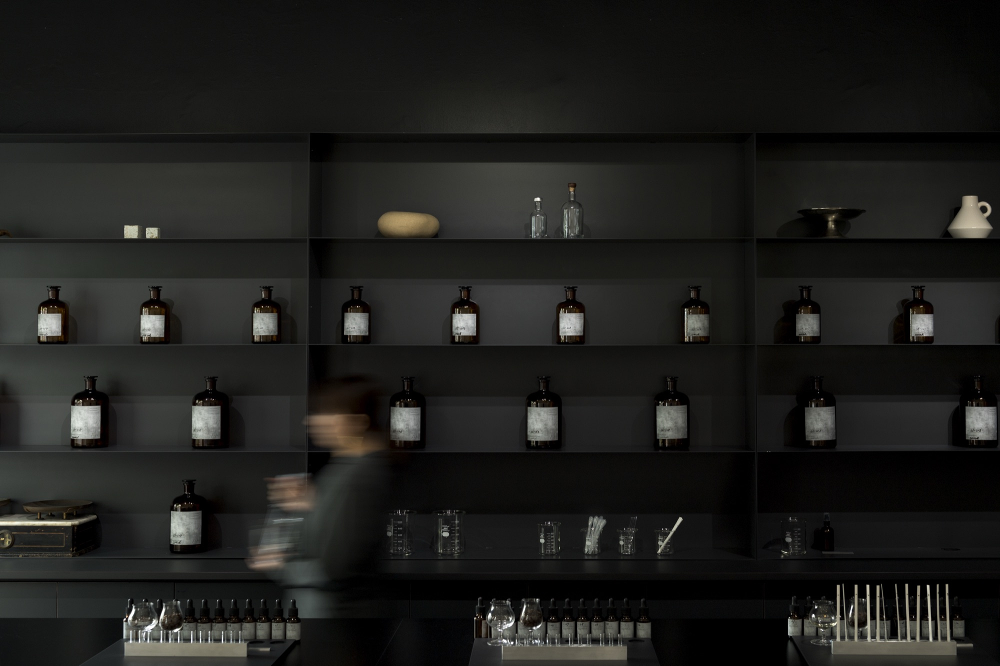
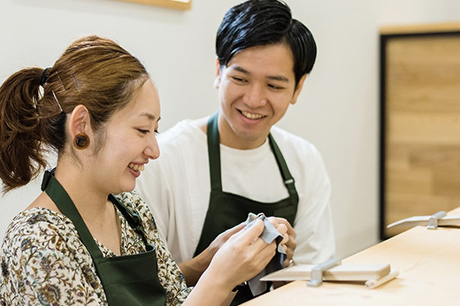
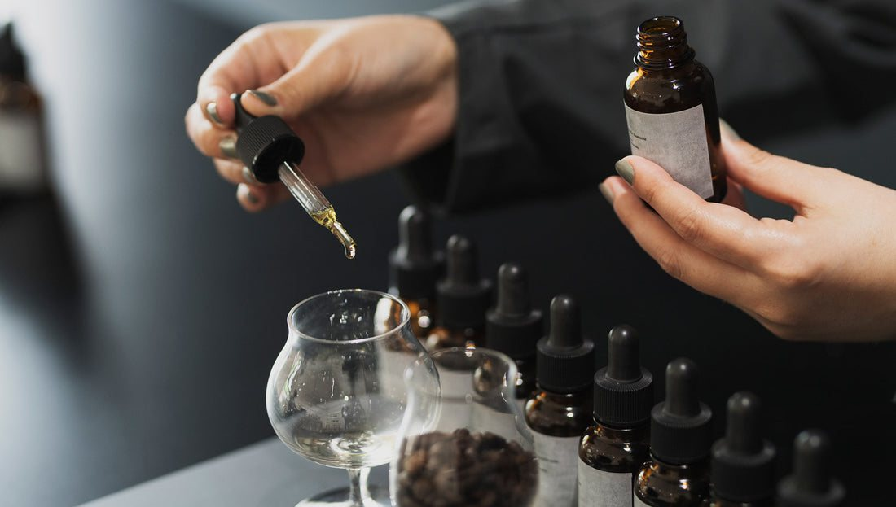
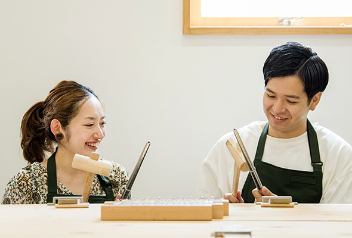
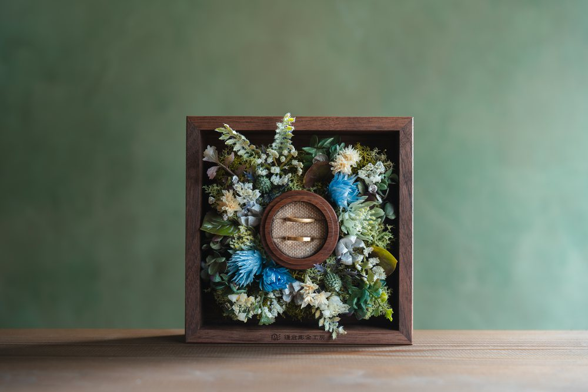
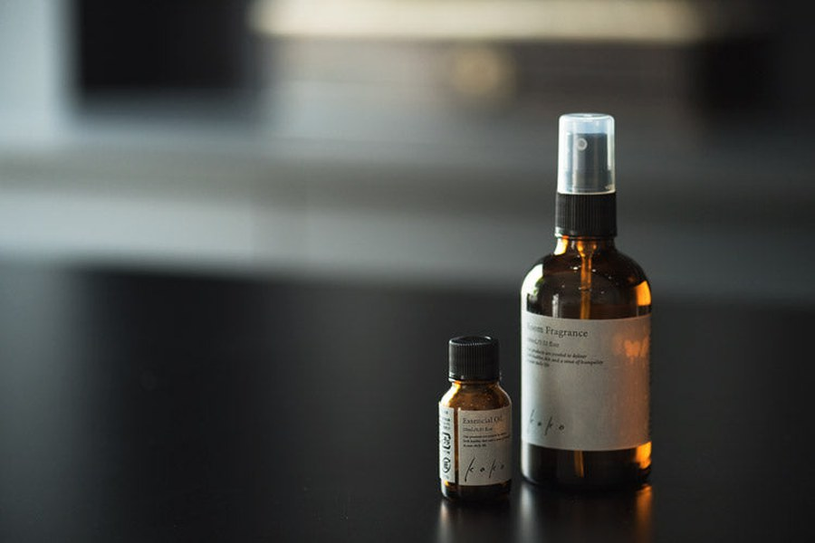

家の香りを、
自分たちで。
一滴の差で変わる香りを、感覚のままに重ねる。お一人ずつ、これからの暮らしに寄り添う香りを調えます。
Kuramae · October–November 2026 · Limited edition
OSAJI kako 鎌倉彫金工房




香りを選ぶ。指輪をつくる。
OSAJI kakoで、一人ひとつの家の香りを。鎌倉彫金工房で、ふたりの結婚指輪を。蔵前でふたつをつくる、2026年10–11月限定の一日です。
一滴を重ねる時間。一本の金属を形にする時間。ふたりの暮らしを思いながら、手を動かすふたつの場所です。
一滴の差で変わる香りを、感覚のままに重ねる。お一人ずつ、これからの暮らしに寄り添う香りを調えます。
叩き、曲げ、磨く。職人とともに手を動かし、結婚指輪を自分たちで形にします。
家に帰るたび。手を重ねるたび。ふたりでつくった一日が、これからの暮らしの中で何度もよみがえります。

お一人につき1種類。スプレーまたはオイルタイプから選び、自分だけの香りに調えます。
石留めやその他の加工オプションがなければ、その日のうちにお持ち帰りいただけます。
掲載時間はおすすめの一例です。開始時刻は予約時に選べます。店舗間は徒歩約10分。香りづくりから指輪づくりまで、蔵前の一日をゆっくり楽しめます。
直感と会話を重ねながら、ふたりそれぞれの「家の香り」を調えます。
ランチや街歩きを楽しみながら、鎌倉彫金工房へ。ふたつの店舗は徒歩約10分です。
職人と相談しながら、叩き、曲げ、磨く。結婚指輪を自分たちの手で形にします。
加工オプションがなければ、香りと指輪をその日のうちに持ち帰れます。
ふたつの体験を、安心して一日の予定にしていただくために。
鎌倉彫金工房の予約ページから、両店舗の体験をまとめてお申し込みいただけます。
お一人につき1種類。スプレーまたはオイルタイプからお選びいただけます。
石留めやその他の加工オプションがなければ、当日お持ち帰りいただけます。追加加工を希望される場合は後日のお渡しです。
各店舗へのご連絡を予定しています。窓口と手順は現在調整中のため、確定後に専用予約ページでご案内します。
2026年10–11月 · 東京・蔵前
水曜・日曜限定
各開始枠2組まで
モデル｜11:00 OSAJI kako → 15:00 鎌倉彫金工房
開始時刻は予約時に選択
鎌倉彫金工房で一括予約
タイアップ予約特典OSAJI kakoの会計時、販売価格から10%OFF
開催日と空き枠を確認する現在の予約リンクは仮です。公開時にタイアップ専用の導線へ差し替えます。